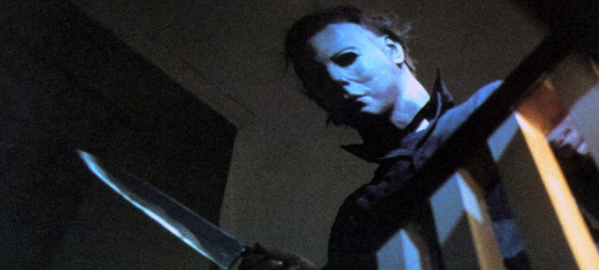
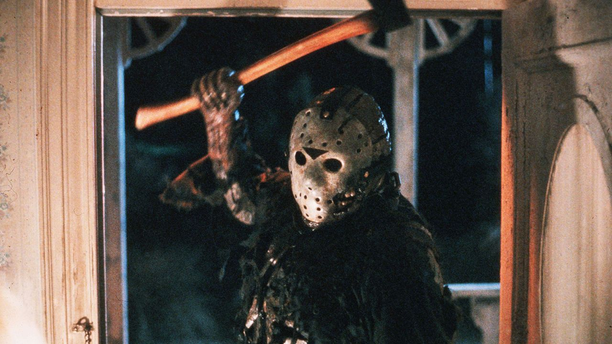

Introducción al género de terror en el cine y la literatura
02/10/22
Contexto
En este segmento de nuestro blog nos enfocaremos en hablar e informar sobre el género de
terror en el cine y la literatura. Un género incomprendido por la mayoría de las personas y
el público en general, trataremos de aclarar algunas creencias falsas sobre lo que forma a
este género, el cómo es mucho más que simples espantos, y cual es el rol que juega en el
mundo del arte y entretenimiento.
Desarrollo
Desde su creación en el mundo de la literatura, el género de terror ha servido como una
manera de expresión de los autores y los artistas, por el cual son capaces de liberar sus
mayores miedos y traumas a través de un medio saludable. El crear esta clase de historias se
basa en tomar la maldad que existe en cada uno de nosotros y darle una forma artística. Es
por esto que desde su creación el género ha servido como una manera de expresar comentarios
sociales, políticos y religiosos.
Hablaremos sobre la historia (las distintas etapas y subgéneros que se han desarrollado con
el paso del tiempo como los slashers, los horror-comedies, el terror supernatural, de
ciencia ficción y el “horror elevado); los mayores creadores de terror (tales como Stephen
King, Alfred Hitchcok, César Romero, John Carpenter, Wes Craven y algunos creadores modernos
como Jordan Peele, James Wan, Ari Aster y Robert Eggers), el impacto social que ha
ocasionado y sobre la moralidad de estas historias.
Motivación
No fue hasta este año que nos hemos vuelto fanáticos de este género y las historias que lo
conforman, dándolo primero por hecho como un género simplista y cliché donde cada película
era lo mismo (ocasionado en gran parte por los “blockbusters” de terror que lo único que
tienen para ofrecer son simples jumpscares), pero conforme nos adentramos más y más, nos
hemos dado cuenta de la cantidad de creatividad y oportunidad de hablar sobre temas
sociopolíticos que de verdad hacen a este género especial.

Las
Mejores Películas de Terror
Black Swan (2010)
Possesion (1981)
Kwaidan (1964)
Rosemary's Baby (1968)
The Cremator (1969)
Get Out (2017)
The Shining (1980)
Alien (1980)
Psycho (1960)
The Thing (1982)
Páginas oficiales de información
Muchas páginas en internet se han encargado de informar a sus lectores sobre este género,
aquí algunas de estas páginas:
El género de terror es uno lleno de simbolismos y metáforas que a veces pueden ser difíciles
de identificar al momento de querer disfrutar una película, lo que nos termina dejando un
sentimiento de no haber entendido lo que la película trataba de decir realmente, como fue el
caso de muchos expectadores con "Nope" del aclamadado director Jordan Peele, estrenada este
mismo año. En el siguiente
video, se dan muchas explicaciones acerca del verdadero significado de este filme:
Video Podcast del canal "Dead Meat" (2022)
El video-podcast presenta a James y Chelsea de "Dead Meat", un canal de YouTube el cual es
uno de los más grandes al tratarse de contenido del género de terror. Además de análisis en
podcast como el video anterior, también manejan las famosas "Kill Counts", encargadas de dar
un resumen de la película en cuestión, mientras se cuentan todas las muertes y se da
información
acerca de los detrás de cámaras. Todo acompañado de su clásico sentido de humor, lo cual
da una experiencia divertida e informativa para cualquier fanático del género.
Regreso a Camp Crystal Lake
15/11/22
¡Jason Voorhees está de regreso!
El pasado 31 de octubre, la productora A24 anunció su próxima cooperación con la televisora
Peacock para desarrollar una nueva serie dentro del universo de la saga de películas
"Friday
the 13th"
famosa por su silencioso asesino portador de una máscara de Hockey: Jason Voorhees. La
serie,
titulada "Crystal Lake", contará los orígenes de este asesino y dará luz a todo el misterio
que rodea a la familia "Voorhees".
El proyecto había sido ideado originalmente como una producción cinematográfica en el 2013,
después del estreno del remake de la franquicia en 2012, sin embargo, el proyecto no fue
dado
luz verde hasta ahora debido a una fuerte batalla legal entre los creadores de la
franquicia.
La película original fue fruto de tres personas en el medio del entretenimiento, Sean
Cunningham,
Victor Miller y Rob Barsamian, los cuales buscaban capitalizar en el éxito de
"Halloween"(1978)
por John Carpenter, pero casi accidentalmente terminaron creando un fenómeno en el género,
generando millones de dólares en taquilla por una producción de tan solo unos cuantos miles
de dólares. Tras este gran éxito, Cunningham tomó las riendas de la franquicia por muchas,
muchas
secuelas. Eso fue hasta 2012, cuando tanto el guionista Victor Miller y el productor Rob
Barsamian
buscaron obtener los derechos de las películas y el personaje de Jason. El conflicto legal
duró durante casi una década, hasta que finalmente Miller ganó el caso, otorgando ahora la
franquicia
a la productora y distibuidora A24, reconocida por producir algunas de las películas
de
terror
más aclamadas por la crítica en los últimos años (se incluyen: "Hereditary",
"Midsommar", "The Lighthouse", "Pearl" y "Bodies Bodies Bodies").
Además, esta no será la primera vez que el estudio se enfoca en contenido para la pantalla
chica, habiendo siendo la productora responsable de la aclamada serie de drama "Euphoria",
distrubuida por Warner Bros a través del servicio de streaming HBOMax,
la cual ha ganado múltiples premios desde su estreno. No solo esto, pero el showrunner
elegido para supervisar la producción y dirección creativa de este proyecto es Bryan Fuller,
mente creativa detrás de "American Gods" y "Hannibal", la cual, tal como esta nueva serie,
presenta los orígenes de otro ícono del terror, Hannibal Lecter. Gracias a todo este talento
fans de Jason y el sub-género de los slashers podrán dormir tranquilos sabiendo que su
asesino favorito estará en buenas manos.
La Leyenda de la Familia Voorhees
Ahora que sabemos todo acerca de la producción de este nuevo proyecto es momento de
preguntarnos:
¿De qué tratará realmente esta serie? Y, aunque es de esperarse que la línea temporal
original
sea completamente ignorada para crear esta nueva historia, analizando el rumbo de esas
películas,
al igual que algunos de los proyectos que A24 ha realizado en el género, podemos empezar a
especular qué sucederá en este regreso a Camp Crystal Lake.
La historia de la familia Voorhees y sus inevitables víctimas comienza en un campamento de
verano
como cualquier otro en Crystal Lake, al menos así es hasta que el niño de la familia, Jason,
se
ahoga en medio del lago cuando los consejeros se ven incapaces de salvarlo. El niño fue dado
por muerto,
y un año después de este trágico suceso, una serie de asesinatos a todos los consejeros del
campamento
empiezan a azotar el pequeño pueblo. Haciendo que el campamento cerrara sus puertas y el
pueblo terminara
prácticamente abandonado durante los años siguientes. Algunas décadas después de la primera
serie de
asesinatos, un grupo de jóvenes intentan reabrir el lugar, solo para caer nuevamente a la
merced
de un asesino desconcido, quien resulta ser Pamela Voorhees, la mamá del presuntamente
difunto Jason.
Pamela muere en un acto de defensa propia de parte de una de las jóvenes, y el caso del
asesino
de Crystla Lake parece quedar resuelto por un tiempo, hasta que es revelado que Jason había
sobrevivido
todos esos años atrás y había establecido su hogar en el bosque, y, después de la muerte de
su madre,
vuelve toda su ira y rabia en contra de todos los jóvenes que se atrevan a entrar a Crystal
Lake.
Si esta historia no fuera lo suficientemente complicada, únicamente se vuelve más y más
complejo y
rebuscado conforme avances en el lore de la familia Voorhees, con una hermana perdida, Jason
regresando
de la muerte (múltiples veces) gracias al parecer al Nekronomikon de la trilogía de "Evil
Dead",
un asesino impostor, una aparente conexión con Freddy Krueger, una maldición que le permite
a Jason
cambiar de cuerpos una vez después de su muerte, y por supuesto, el eventual viaje de Jason
Voorhees
al espacio cientos de años en el futuro. Pero honestamente, podemos contar con que A24
ignorará la mayoría de esto
y se centrará más en la relación entre Pamela y Jason, y como es que la tragedia los llevó a
cometer
tantas atrocidades.
En términos de tono, podemos esperar algo parecido a la otra franquicia slasher del estudio:
trilogía
de "X" por Ti West y Mia Goth. Esta trilogía se centra en dos personajes
ligados entre sí por
sus destinos más se ven separadas por décadas, Pearl y Maxine, dos chicas que en su sueño de
convertirse
en estrellas, terminan viéndose involucradas en un ciclo de muerte y terror. "X" ofrece la
cantidad de
violencia, sustos y jóvenes calientes que los fans del subgénero han llegado a esperar de
estas películas,
mientras que "Pearl" ofrece un drama familiar, en el cual vemos el descenso a la locura de
una joven que
termina transformándose en una despiadada asesina, de la misma manera que podríamos ver este
descenso
de parte de Pamela y el joven Jason.

Jason Voorhees, el asesino principal de la serie de películas "Friday the 13th"
 Introducción al género de terror en el cine y la literatura
Introducción al género de terror en el cine y la literatura
 Páginas oficiales de información
Páginas oficiales de información
 ¡Nop!
¡Nop! Regreso a Camp Crystal Lake
Regreso a Camp Crystal Lake